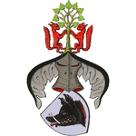

499027 Arlöf Mortensdotter Thott
* 1496 Villie, Skurup (M)
† efter 1556 Rydsgård, Vilie (M)
Blev minst 60 år
* 1496 Villie, Skurup (M)
† efter 1556 Rydsgård, Vilie (M)
Blev minst 60 år
998054 Morten Josephsen Thott till Jordbjerg
* omkring 1470 Jordberga, Trelleborg (M)
† omkring 1561 Jordberga, Trelleborg (M)
Blev ca 91 år
* omkring 1470 Jordberga, Trelleborg (M)
† omkring 1561 Jordberga, Trelleborg (M)
Blev ca 91 år
998055 Berete Pedersdatter Neb
* omkring 1470 Söllerup, Själland, Danmark
† 1550 Jordberga, Trelleborg (M)
Blev ca 80 år
* omkring 1470 Söllerup, Själland, Danmark
† 1550 Jordberga, Trelleborg (M)
Blev ca 80 år
1996110 Peder Offesen Neb
* efter 1400
† efter 1461-03 Söllerup, Själland, Danmark
* efter 1400
† efter 1461-03 Söllerup, Själland, Danmark

1996111 Berete Eriksdatter Skave
* omkring 1425
* omkring 1425
3992222 Erik Jacobsen Skave
* omkring 1370 Eskildstrup, Sorö, Danmark
† omkring 1475 Kvaerkeby, Sorö, Danmark
Blev ca 105 år
* omkring 1370 Eskildstrup, Sorö, Danmark
† omkring 1475 Kvaerkeby, Sorö, Danmark
Blev ca 105 år

3992223 Tale Basse (Gamle)
* Kvaerkeby, Sorö, Danmark
† Eskildstrup, Sorö, Danmark
* Kvaerkeby, Sorö, Danmark
† Eskildstrup, Sorö, Danmark